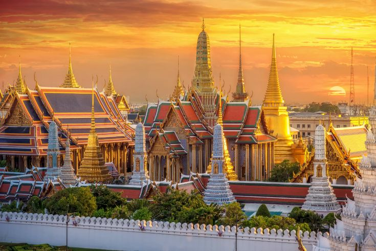
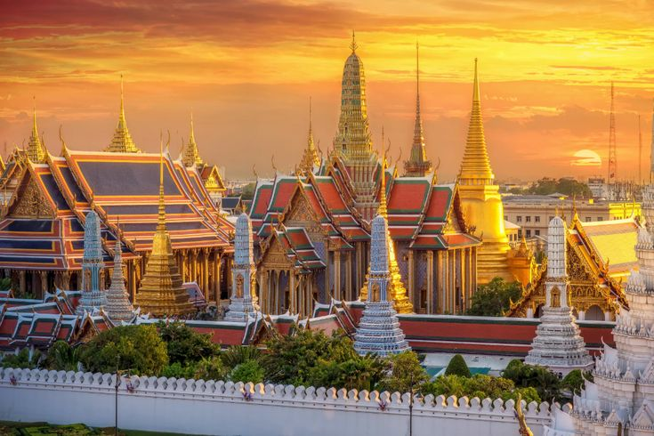
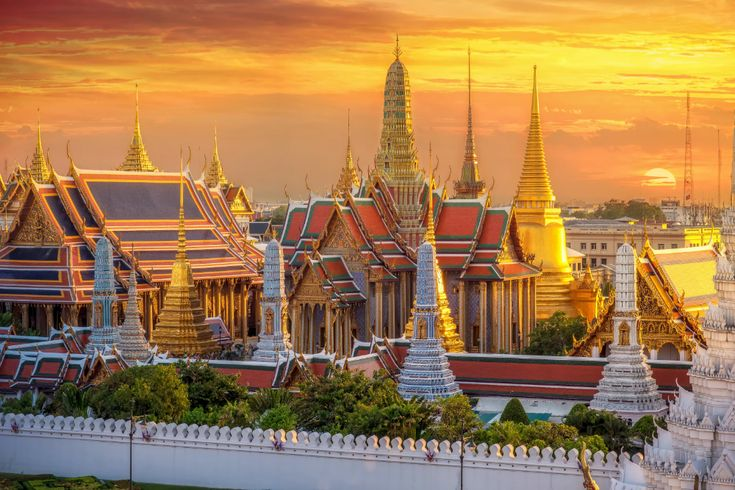

Travelling

 

I love exploring new cities and cultures—planning routes, discovering hidden spots, and collecting stories along the way. Travel keeps me curious and fuels my creative perspective.
Hello! I'm Casey. After working in various industries for almost 30 years, I finally decided to follow my passion for creativity and design. At the age of 50, I took a bold step and enrolled in a part-time Digital Communication Diploma course to pursue my dreams and explore my creative mind. This page marks the beginning of that journey.

I love exploring new cities and cultures—planning routes, discovering hidden spots, and collecting stories along the way. Travel keeps me curious and fuels my creative perspective.
From hawker centres to all kinds of cafes, I enjoy hunting down great eats. Tasting and documenting flavours is my way of celebrating local culture and shared experiences.

I believe that it’s never too late to start something new. Life is about continuous learning, growth, and staying curious. Every challenge is an opportunity to rediscover yourself — and to create something meaningful from it.